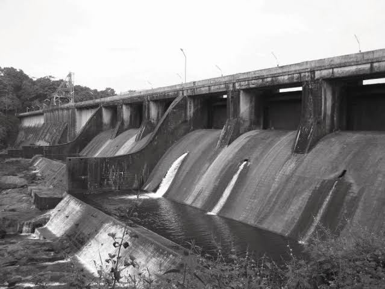
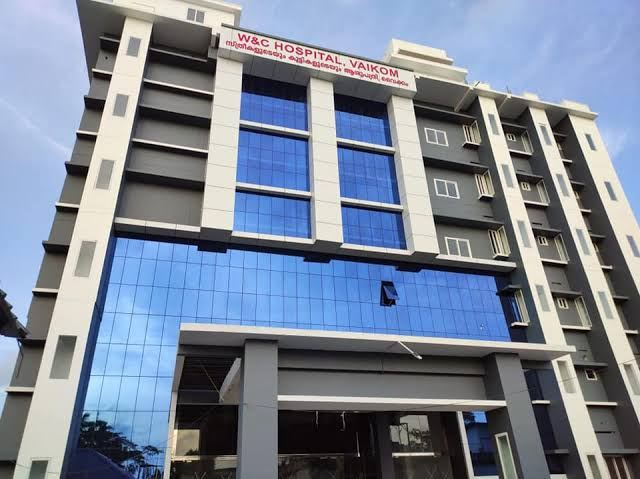
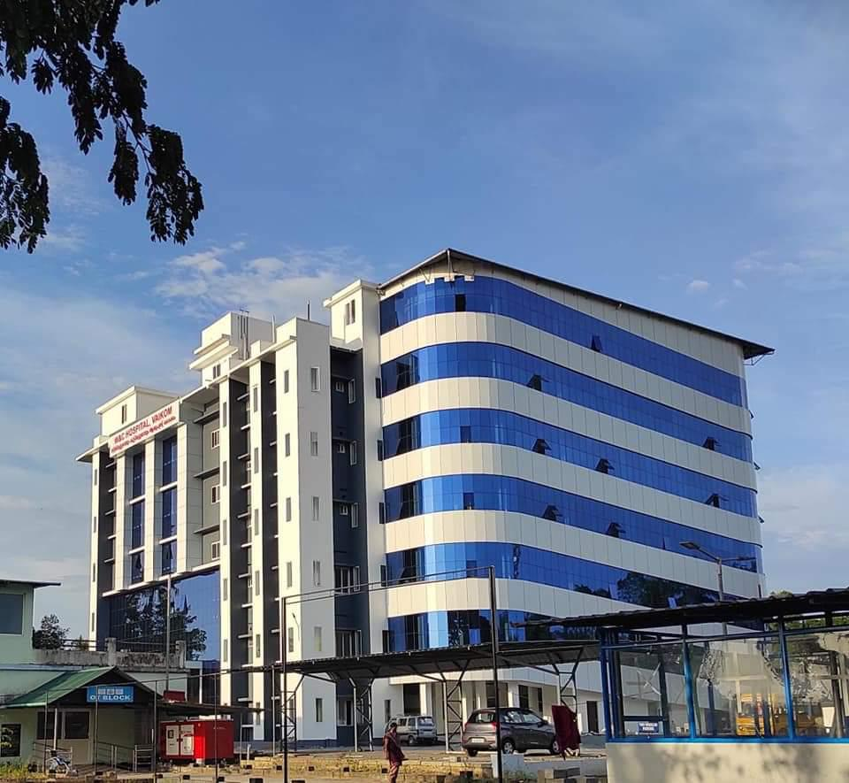
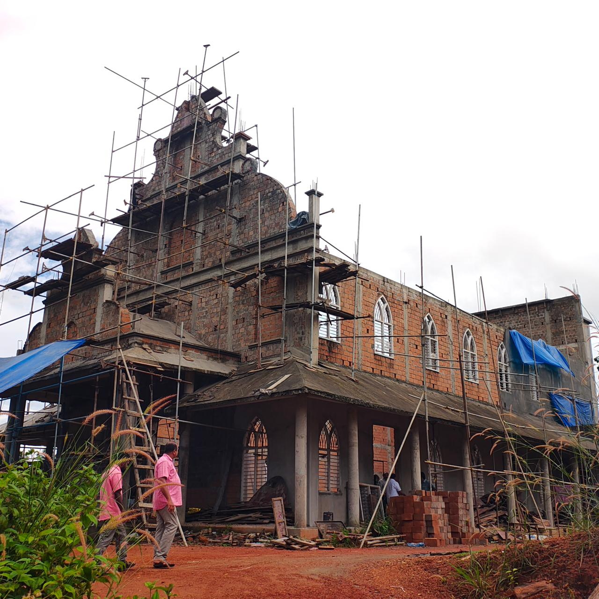
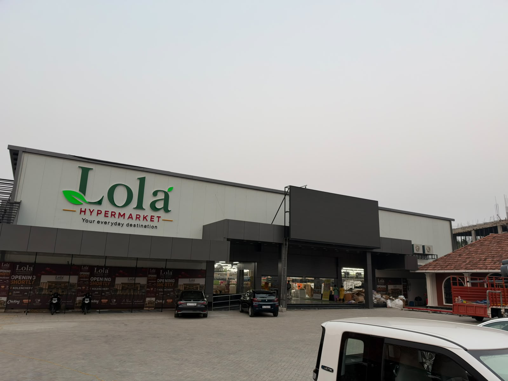
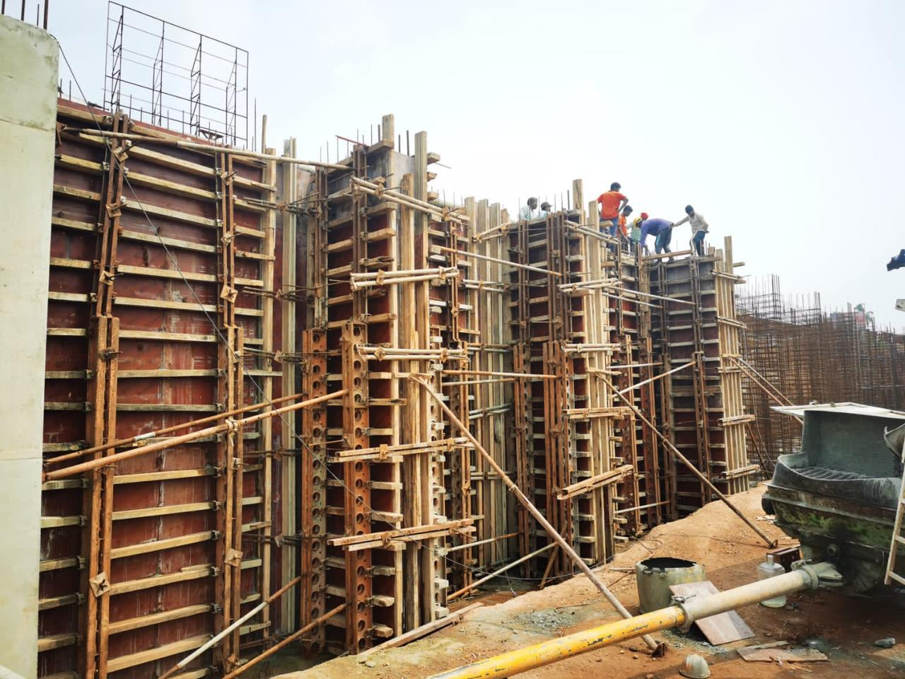

01
St. Mary’s Church, Anchalpetty
Church, parish hall, parsonage and land development, completed in about eleven months.
View project →Beyond Structures, We Build Legacy
A Class A Government construction company from Ernakulam. Debuted with lift-irrigation schemes along the Periyar Valley in 1920, building for Kochi Metro and Cochin Refinery today. Over a century of roads, dams, canals and buildings across Kerala.
Civil Construction Services in Kerala
Church, parish hall, parsonage and land development, completed in about eleven months.
View project →53,000 sq ft of civil works and land development, finished in just seven months.
View project →A ₹32 crore hospital complex on the banks of Vembanad Lake, finished through COVID.
View project →₹79 crore, 4.5 km widening of the Airport–Seaport Road to six lanes for the metro.
View project →

About Us
K V Paulose and Sons, a Kunnel family-owned enterprise, traces its roots back to 1920, when it was founded by the visionary Paily Yoyak during the British Raj. It began with lift-irrigation projects for the padashekarams (paddy fields) along the Muvattupuzha river in the Periyar valley, and with roads such as the old Muvattupuzha road and the Karukappilly road from Elamkulam (now Kolenchery).
More than a century later, K V Paulose and Sons Pvt Ltd remains a pioneer in the industry. It is a Class A Government contractor trusted by PWD, the irrigation projects, Kochi Metro Rail, Kochi Refinery and many more, and its focus on quality, customer satisfaction and innovation is unchanged.
Rooted in Ernakulam district, we build across Kochi, Aluva, Muvattupuzha, Kolenchery, Perumbavoor and the rest of Kerala.
Tested materials and inspected at every stage.
Trained crews, clear procedures, regular audits.
Trusted by PWD, irrigation departments and public institutions.
Our Legacy
Lift-irrigation projects for the padashekarams along the Muvattupuzha river, and roads including the old Muvattupuzha road and the Karukappilly road from Elamkulam.
Licensed by the Superintending Engineer, Aluva Division. Executed the Thammanimattom, Karukappilly and Mazhuvannoor lift-irrigation schemes, pump houses, inland boat jetties, and roads such as Kayanad–Muvattupuzha and Nechoor Kadavu.
As Class A Government contractors, they worked on the Kallada, Idamalayar, Sholayar and Malankara dams and on major canal systems and distributaries in KIP, PVIP and IIP, some in partnership with M Chackopillai and Company.
Turned the family's contracting enterprises into KV Paulose and Sons Pvt. Ltd. Projects include PWD Irrigation (PVIP, IIP, KIP, MVIP), PWD Roads and Buildings, PMGSY, NABARD, Kochi Refinery, Kochi Metro Rail and KSCC. He also diversified into plastics manufacturing (the KAVERI brand), virgin coconut oil and bottling with RUBCO, and a collaboration with Nilkamal.
The eldest and most dynamic of his generation. As a Class A Government contractor he completed projects in the Idamalayar and Muvattupuzha Valley irrigation projects and for the PWD Roads Department.
The new generation upholds the legacy while embracing modern techniques, with projects for the Harbour Engineering Department, Kochi Municipal Corporation, RBDCK, PMGSY and PWD Buildings. They also do private building construction and run an export–import business.
Our Team
Our Clientele
Gallery
Dams, canals, roads, bridges and buildings — from the early years to today.
Contact
Tell us about your project — our team will get back to you within one working day.

Featured Project · Building Construction
The Women and Children Hospital and the administrative block of the Taluk Headquarters Hospital, Vaikom, stand on the banks of the scenic Vembanad Lake. The site held very old buildings, and the new structure was built on the waterfront side of the complex. For the administrative block, end-bearing piles were driven many metres below ground level along the lake bank.
The project was initiated by K. Ajith, MLA, Vaikom, and the W&C Hospital was inaugurated by K K Shailaja Teacher, then Health Minister of Kerala.
The final stretch of the work fell during COVID. Despite the conditions, we completed the work in every respect.

Featured Project · Building Construction
A landmark project delivered in record time. The work covered three major structures — the main church, the parish hall and the parsonage — together with the complete land development and associated infrastructure.
The main church serves as the spiritual centre of the parish, the parish hall hosts community gatherings and religious functions, and the parsonage houses the clergy. With the land development, the result is a complete, working campus.
The work ran on a war footing, with careful planning, coordinated manpower, efficient use of resources and an unwavering commitment to quality, keeping steady progress on every work front at once.
Three buildings and full site development were brought to completion stage in about eleven months — proof of our team’s dedication and our ability to deliver complex, multi-structure projects with speed, precision and quality.

Featured Project · Building Construction
A landmark commercial development. Lola Hypermarket, built for the Grandmas Group, a sister concern of KP Chacko Jewels, is one of the largest commercial developments in Kolenchery and a milestone in the town's retail and business landscape.
Our scope covered land development, retaining walls, civil and structural works, steel fabrication and erection, landscaping and the associated site works.
Work began in November, and all 53,000 sq ft of civil construction and land development was completed in just seven months — a demanding schedule met through strong project management, efficient execution, engineering expertise and a firm commitment to quality.
As it nears its final stage, Lola Hypermarket is set to become a prominent landmark in Kolenchery and a new benchmark for commercial infrastructure in the town. For us it is more than another contract: it is a project we are proud to have built with vision, commitment and excellence.

Featured Project · Major Infrastructure
The Airport–Seaport (AP-SP) Road along the proposed Metro Phase II alignment was a two-lane road carrying heavy traffic.
Phase II of Kochi Metro, from Palarivattom to Infopark, could begin only after this road was widened to six lanes, freeing space for the viaduct pillars along its centre line.
To do this we built a massive counterfort concrete retaining wall, about 500 m long and roughly 12 m high, and widened the road to the full six-lane width.
Work on the metro viaduct pillars and the Kakkanad stations is now under way along the road we widened.